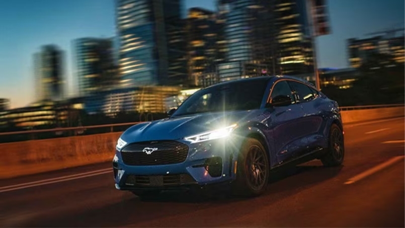
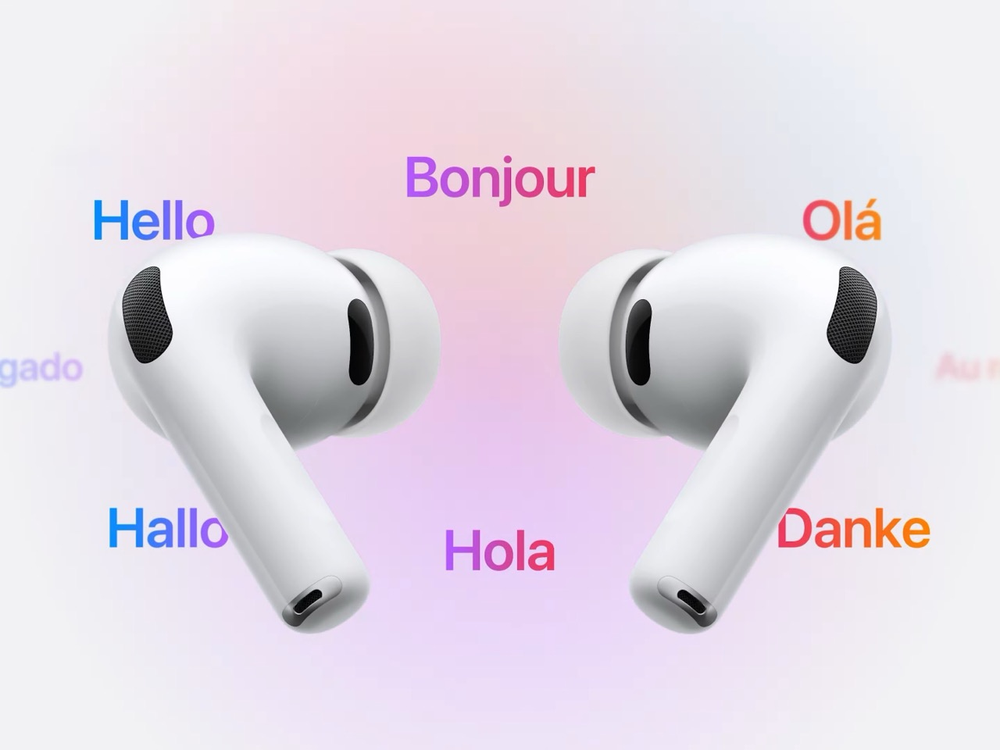

Ford med første godkjent selvkjørende bil i Norge
Slipp rattet på E6 og E18. Flere biler har et system med selvkjøring, men Ford er den første godkjente selvkjørte bilen i Norge
Første godkjente selvkjørende bil i Norge
Ford har fått godkjenning til å lansere førerassistansesystemet sitt BlueCruise på norske motorveier, skriver Elbil24.Det betyr at mange Ford-eiere nå kan slippe hendene fra rattet mens de kjører, så lenge de holderblikket på veien.BlueCruise er et nivå 2-system, der sjåføren har det fulle ansvaret for kjøringen, menbilen tar seg av styring, akselerasjon og bremsing. Et infrarødt kamera overvåker førerens øyne og hodebevegelser. Hvis føreren ikke følger med, vil systemet be om at man tar kontrollen tilbake, eller til slutt stoppe bilen. Systemet har vært i bruk i USA en stund, og i Europa siden 2023. Full selvkjøring, der bilen har ansvaret for kjøreturen, kalles for øvrig for nivå 5 og er fortsatt langt unna.
Østlandet først
Systemet kan foreløpig slås på for deler av E6 mellom svenskegrensen og Oslo, E18 mellom Drammen og Sandvika, samt strekninger sørover mot Sandefjord og gjennom Østfold. Ford melder at 87 prosent av motorveistrekningen mellom Oslo og Roma kan kjøres «hands free» med BlueCruise-systemet. – Vi er svært stolte over å være blant de første som kan tilby en godkjent førerassistanseteknologi som lar kundene ta hendene av rattet på utvalgte motorveier, sier Per Gunnar Berg, administrerende direktør i Ford Motor Norge i en pressemelding.
- Tesla på teststadiet
Tesla har også fått godkjent tester på dette nivået i Norge, men foreløpig ikke frigitt det for bruk av bileierne selv. Til forskjell fra Ford bruker Tesla i hovedsak kameraer for å styre sine nyere biler, mens Ford også bruker ulike sensorer og lidarer som kan ha en fordel i dårlig vær, som ved regn og snø.

KI oppdaget 20 prosent flere krefttilfeller
Forskere er positivt overrasket over hvor mange krefttilfeller kunstig intelligens (KI) fant. Det betyr at svulsten kan fjernes tidligere.

Verdens viktigste selskap leverer tall
Er tek-oppgangen en boble? Mens Nvidia håver inn, svir kundene av penger. – Urovekkende, sier investeringsdirektør Robert Næss.
Apple lanserer live-oversetting med airpods
Ny airpodsfunksjon "live-oversetter". Apple lanserte i september 2025 "Live Translation" for Airpods. Nå kan Airpods oversette samtaler med en funksjon kalt Liveoversetting.